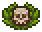

Concepts
List of Concepts
Health
Health works like in most games. The player receives damage from enemies and certain activities and if it drops to zero, they die. If the player dies, they respawn at their bed with full health and all items.
Health can be restored by either sleeping or using honey, health potions, or beer.
See also: Monsters.
Energy
Energy is what allows the player to fight, fish, gather, mine, build, work, craft, and do most everything else. Energy is restored with food, drinks, or by sleeping.
Tools cost energy to use, and better tools both reduce this cost and have better efficiency. Upgrading your tools from the most basic (Rusty) tools to higher tier tools is absolutely critical.
Walking, carrying things (corpses, logs, stone blocks), making things with the oven, and smelting things (Iron bars, steel bars) do not require energy.
If the player does not sleep for two nights they get the Sleepy debuff, which burns off energy until about 20 is left.
Be aware that making food costs energy too, and while the oven does not consume any, the fuel it runs on can take a lot of energy to make.
Sanity
Sanity is something that can be found in the savefiles, and occasionally during sleep you may notice a purple-ish number ticking up. This is sanity, something that is not implemented yet but this means certain actions may have repercussions on your soul.
Currently removing a Chest or crafting a Prayer resets your sanity to 0.
(!) An Admin on the Steam-Group confirmed that Sanity will not be used in the future, since they abandoned the idea 6 months ago.
Graveyard, Morgue, and Corpses.
One of the most important, yet poorly explained concepts of the game relates to corpses, how to treat them in the morgue and what to do with them.
The donkey delivers corpses to the morgue. These corpses can be checked at the autopsy table for their rating. This rating is displayed as skulls; red skulls are a negative rating, white skulls are a positive rating, and green depicts decay which will deteriorate the positive rating over time. Red skulls subtract from the grave rating. White skulls show how much graveyard score can be gained with decorations.
Graveyard rating affects how much money is gained from church sermons.
See also: Graves.
Technology
Technology is an essential means to advance in the game. Technology is revealed by story progression. It must be unlocked by spending technology points, which come in three types: Green, Red, and Blue. Green technology points come from organic and nature-oriented things (gathering flowers, cutting down trees). They are used for nature-oriented technologies such as farming. Red technology points come from heavy labor (mining, smelting, crafting). They are used to unlock technologies relating to building and crafting things, such as new tools. Blue technology points are obtained from spiritual and technological things, such as organs and gravestones, but also alchemy such as glass smelting and extracting powders. They are used for higher understanding of things, such as better gravestones and better tools and perks. Technologies can require a combination of all three types to unlock.
See also: Technologies.
Alchemy
Alchemy involves studying various items and breaking them down into elementary components.
There are various machines which break otherwise mundane items down into alchemical reagents. These can then be combined in the Alchemy table to make many useful things, like potions.
See also: Alchemy.
World
Main locations: Sweet home (where you spawn), Graveyard/Church, Village, Quarry, Basement (Morgue, church basement, cellar, dungeon entrance. All connected and dug out over time), Dungeon (unlocked via quests), and the Fort. Named locations (top right of your screen) tend to share inventories. That is, if you place wood in your Workyard chest, that wood can be used by any chopping block, blueprint desk, woodwork table etc in your yard. Same for the morgue, cellar, etc.
See also: Locations
Time
The game cycles between day and night. During the night, monsters may spawn. Sleeping in your bed is the ONLY way to save the game. The day changes when the cross on top of the church points to the moon. NPCs that only arrive during certain days start walking to their spot at dawn, and leave at dusk. NPC traders gain new stock overnight.
The week is divided in 6 days. Certain NPCs are only present on certain days. This can be seen in the NPC tab. Because of the large distances involved, be sure to plan ahead.
Church
The church quality rating affects the faith and donations that are gained from each sermon, as well as the chance that a selected prayer succeeds. Burning candles in candelabras and burning incense in incense burners increases the church rating for a day, while a properly maintained and planned graveyard with a high rating 
See also: Church, The Graveyard.
Dungeon
The dungeon becomes available later in the game. Monsters are present regardless of time of day. It's a good idea to bring food for energy and potions for health. Health potions can be obtained from breaking jars/barrels. Press space to swing your sword to break barrels and jars. Using the "up" stairs on any floor takes you back to the dungeon entrance.
See also: Dungeon.